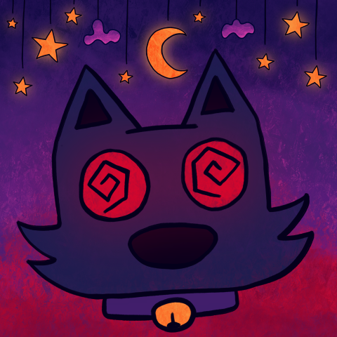

Moon Cat redraw Dec. 2024. Style inspired by Cult of the Lamb, and the collar bell is a nod to Bee and Puppycat.Okay hear me out… What if more buildings were purple? This is the historic Fillmore Auditorium on east Colfax in Denver, with some colors reimagined.My bike that I was so excited while waiting for it to be ready for pick up I had to paint it.A painting for the 2022 Drawtober prompt Garden of Magick.A bat sleeping in past twilight. Painted on the brink of fall with peak cozy vibes.A chaotic mixed media sketch of a rainy day in Cheesman Park.A cute funky house I sketched on site from the park. The roof's amazing lines had me enamored.A drawing I gifted a friend that has a doctor celery persona.A painting based on a photograph from my dear friend Andrew, an outstanding photographer.I read Under the Whispering Door by TJ. Klune and I ugly cried multiple times throughout. It’s poignant yet hopeful.. (as if that comes close to explaining it, as Wallace would say.) The dust jacket designed by Chris at Red Nose Studio is as beautiful as the story and I really wanted to try an urban sketch of the stacked tea shop on the front. I didn’t come close to doing the background justice and added only hints to the forest since I was focused on the building structure. I recommend reading Under the Whispering Door, as well as House in the Cerulean Sea by the same author.A simple moon and clouds sketch on rough cotton paper.A sketch of mountains with watercolor and fine liners on heavy texture cotton paper.The original drawing of my avatar Moon Cat. Mixed Media, mostly alcohol markers and paint pens.